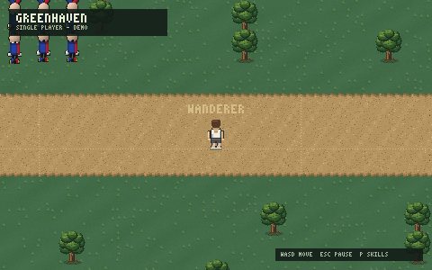

Talk to the meadow
Enter opens chat and reaches everyone in your world. Villagers talk back, and some keep shops — you start with 100 coins and a merchant who deals in sand and clay.
Greenhaven is a native window, not this site. Download the client, pick a name, and you are standing in the meadow. Ten minutes, start to first chop.

You wake in Deepwood, walk out along one faint track, and Ottertown is already busy being a place — with other players in it, or without. Everything below starts with a single click.
Enter opens chat and reaches everyone in your world. Villagers talk back, and some keep shops — you start with 100 coins and a merchant who deals in sand and clay.
You send where you want to go; the world server decides where you stand. No slipping through a tree on the diagonal, no rubber-banding into the river.
Name, place, skills, coins and inventory are saved with every visit. One account, three worlds. The meadow does not forget you.
Nine trees, twenty rocks, six fish, and sand and clay in the ground. Every harvest is checked by the world and every point of XP is kept.
Hold Shift to run at double speed. Fresh ground under your feet trains Stride — loops around one tile pay nothing. The dust follows your boots.
F5 stands you inside your character's eyes, M unrolls the full world map, P opens your skills sheet. F1 lists every key.
A native window, not a browser tab. Rust world server, Bevy client, PostgreSQL saves. Windows and Linux today; no account needed to wander Single player.
A short illustrated opening plays first — click anywhere, or press Space or Esc to skip it. You land on the main menu, and a small card from the dev says hello once per launch.
Windows: run GreenhavenSetup-0.1.14.exe. Linux: untar, chmod +x greenhaven, run it.
Play asks for an account so your character is kept across visits and worlds — create one right there. Tick Remember username and the name is filled in next time. Passwords are never saved.
Single player needs nothing. It walks the map with no server and nothing on the wire.
Press PLAY and the world chooser opens with each world's live status. Your pick is remembered. Then a name: 1–20 letters, numbers, spaces, - or _. It floats above your head from then on.
Three worlds, one Ottertown. Your account works on all of them.
The hint chips in the bottom corner of the game show these too, and F1 lists the rest.
A cold campfire, four young oaks, one faint track. Click an oak. That is your first 25 Woodcutting XP and your first log.
Follow the track out. Every fresh cell under your boots pays +4 Stride. The dust follows you; the warm trail behind you pays breath back instead.
Decked boards, a ring road, four gates. Press M once to see how far the world goes. Press Enter and say hello — someone is usually there.
South-west for the lake and its piers. South-east for the quarry and copper. North-east for the birch grove and the pond. Press P whenever you want to see the ladders move.
Your character is saved with every visit — leave today, come back next week, and the meadow remembers.
v0.1.14 · EARLY DEVELOPMENT · WINDOWS & LINUX